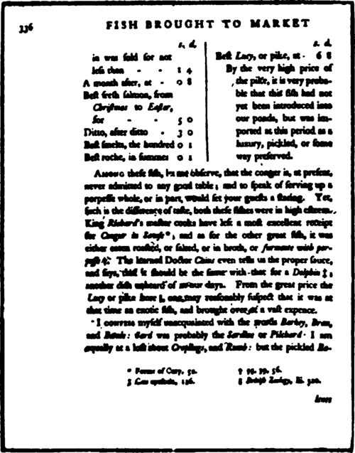
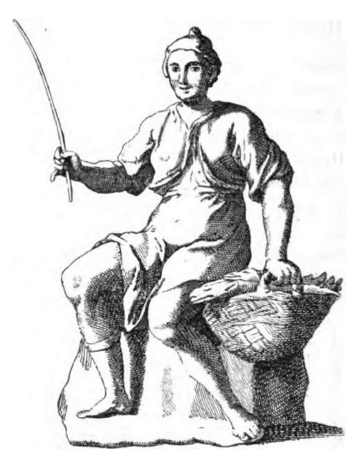

Chapter XXXI. Section II. Sea-Fishing From Fixed Positions
Description
This section is from the book "Fishing", by Horace G. Hutchinson. Also available from Amazon: Fishing.
Chapter XXXI. Section II. Sea-Fishing From Fixed Positions
A boat may, of course, be to all intents and purposes a fixed position, provided the boat be sufficiently large and the water sufficiently smooth. I have fished from a 6000-ton steamer in an Australian estuary, or, again, when hung up in the Suez Canal, and there was no more movement than if I had been conducting operations from the Admiralty Pier, Dover, the pebbly foreshore near Aldeburgh, or any one of my favourite rocky headlands down in the west country. In the ordinary way, however, the above distinction is one with which few will quarrel, and the very rare occasions on which the sea-angler at home is able to demonstrate the absolute immobility of his boat are rather evidence of his well-behaved stomach than of the truth of his proposition.
Now, each form has its advantages and its drawbacks. The advantages of the boat are obvious, for it takes the angler away from the shallow and disturbed water inshore to the haunts of the big fish; and if they are not feeding on one ground, it quickly transports him to another, till he comes in luck's way. The pier-fisher or beach-fisher has to wait till luck comes his way. He cannot seek it. The Moors, who are artists in the finer interpretations of leisure, do some of their shooting this way. A Moor will load his long-barrelled flintlock gun, and he will then sit with it on a dry and stony hillside for an hour or for six, as may be necessary, until some bird flies overhead or perhaps a hare goes lolloping along in front. Then he fires, and generally misses. Then he loads again, and this time, after another interval, he may bring down a hawk or a hoopoe. After all, the boat-fisher, save when he is whiffing for mackerel or pollack, also sits still, but he at any rate sits him in the highway of the fishes, and when he has sat long enough in one spot without getting a bite, he fetches up his anchor, sets his sail, and proceeds to sit in another. The drawbacks of the boat are also sufficiently patent: danger, discomfort, and expense may all in greater or less degree rule it out of court. On the other hand, sea-fishing from piers and beaches is not without its advantages, though some of these will be more obvious to the beginner than others. What will strike every one, even without any special knowledge of sea-fishing, is that the pier or beach gives immunity from sea-sickness; that it may be fished from in all weathers; and that it costs little or nothing, since the small fees charged for fishing from some piers with a high reputation, deserved or otherwise, for fishing can in no way compare with the considerable cost of boats, particularly when it is necessary to hire the larger sailing-boats, with two hands, in order to reach the outer fishing grounds. These three considerations, then, in favour of fishing from fixed positions, as I have called them, will occur to all. Less obvious to those with no knowledge of the sport is the manner in which such positions bring the angler within reach of really sporting fish. There are fishes which, like the bass, the pollack, and the grey mullet, frequent the neighbourhood of piers at one season or another for the sake of the food, probably the small crustaceans that harbour in the seaweed on the piles, and also perhaps for shelter. In certain conditions, too, of wind and tide, the bass in summer, and the cod and whiting in winter seek their food just behind the surf of the breaking waves, for which reason there is at such times a better chance of catching them from a rocky headland or sandy beach than there would be if fishing in a boat, since the boat could not venture sufficiently close to the broken water to bring the angler within reach of the fish. The angler, moreover, who has access to an open sandy coast, but not to a boat of any kind, may catch fish by one or two special methods, which, though they may not in every case come up to the highest standard of sport, are yet very profitable at times, and these will be described after some reference has been made to the more regular ways of fishing.
Without further preamble, then, as to the ethics of fishing from the shore or from piers, I will now endeavour to give some hints whereby such of the afore-mentioned methods of fishing as are practicable in these situations may be adapted to the altered conditions.
In his usual ingenious style, my friend, "John Bickerdyke," has in his Badminton volume on "Sea-Fishing" traced an imaginary evolution of the rod on a rocky coast, primitive man having repeatedly torn his line against the shell-edged rocks until the happy thought came to him to cut an ash sapling, and thus haul fish and line clear of these obstacles. In the ordinary course, indeed, the rod, generally with float tackle, may be regarded as the correct gear for fishing from the rocks, while the hand-line is more appropriate to a sandy beach, though, as will presently be shown, a kind of rodarrangement is sometimes used to enable the fishermen to fling it sufficiently far. Touching this long casting, it is to be remarked that long casting does not always mean more fish. There are much advertised tournaments of fly-casting and bait-casting, and on such occasions it is no doubt a fine thing to cast farther than your neighbour. In actual fishing, however, the man who casts far often throws his baits right over the heads of the fish, and pitches them out of their reach. If I use float tackle from a pier or from rocks, I always search every foot of water up to the foot of the one or of the other. Thus, if the tide is going out, I drop in the float close to the rocks or close alongside the pier, and let the falling tide carry it gradually out twenty or thirty yards, pulling line off the reel as required. If, on the other hand, the tide is rising, I pitch the float twenty or thirty yards-this can be done with a long rod and a little practice-and let the water bring it in to my feet, not removing it for another cast until it is touching the rocks or the pier, as the case may be. When, in autumn, numbers of small pollack-up to a couple of pounds in weight-assemble under Teignmouth pier, they are to be seen at low water swimming round and round among the posts. Catching them in such circumstances on a trout-rod is no easy matter, for one has to keep the frantic fish, when hooked, clear of the ironwork. Yet to fish outside would be to catch nothing. The fish feed only right under the pier. The same may be said of bass or grey mullet when caught alongside of quays. These fish are alike in their habit of routing with their noses among the slimy woodwork of many of our docks, and the float must be dropped noiselessly so that the baits dangle close to the walls, and are there sucked by the prowling fish as if from the wood or iron itself. If the float were cast out into the stream or harbour a dozen feet from the wall, the bait might lie there unnoticed throughout the day.

Continue to:
- prev: General Remarks On Sea-Fishing From Boats. Continued
- Table of Contents
- next: Chapter XXXII. Sea-Fishing From Fixed Positions: Fishing From Rocks